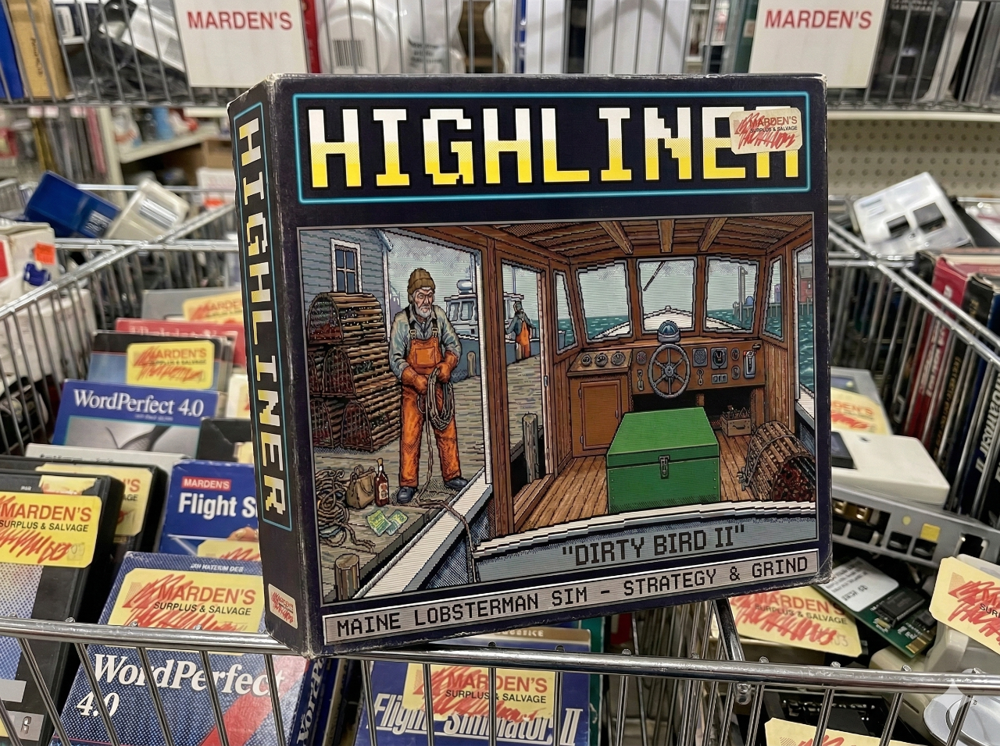

HIGHLINER is a terminal-based Maine lobster fishing simulator. You start with an Eastern 22, 20 traps, and $500 in your pocket. Make it through the season, pay your bills, upgrade your boat, and work your way up to running a real operation.
NOAA marine forecasts, realistic trap economics, grade-based lobster pricing, random events, equipment upgrades, bycatch permits, and a fleet that goes from a 22-foot open boat to a 46-foot Wesmac. The Gulf don't care.
🦞 HIGHLINER — Salt, Diesel & Stubbornness Day 1 | Fog Bound (Eastern 22) | $500 [1/] LOG [2/M] MAINT [3/D] DOCK [4/W] WHARF Cash: $500.00 Fuel: 40/40 gal Bait: 50/250 lbs Traps: 20/40 ──────────────────────────────────────────────────────────────────────────────────────────────────── ── MORNING BRIEFING ───────────────────────────────────────────────────────────────────────────── NOAA MARINE FORECAST — EASTERN MAINE COASTAL WATERS Clear N winds around 5 kt. Seas 2 to 3 ft. Wave Detail: N 2 ft at 4 seconds and E 1 ft at 9 seconds. Vessel: Fog Bound — Eastern 22 Engine: 100% | Zincs: 100% | Hydraulics: 100% ── MARKET ─────────────────────────────────────────────────────────────────────────────────────── Chix $5.85 Quarters $6.60 Selects $7.85 Jumbos $10.60 Supers $14.10 Culls $3.85 Diesel $4.07/gal Herring bait $0.76/lb ▶ ENTER to fish [S] Stay in port [W] Wharf [M] Maintenance Weather: Clear 5kt Seas 2-3ft Phase: MORNING PREP [↑↓/PgUp/PgDn] scroll [Q] Save+Quit
══ WHARF MARKET & REPAIRS ══════════════════════════════════════════════════════════════════════ ── SUPPLIES ────────────────────────────────────────────────────────────────────────────────── ► Bait (50 lbs) $38 Herring @ $0.76/lb — roughly one day on 20 traps Bait (200 lbs) $152 Bulk herring @ $0.76/lb — 3-4 days supply Fuel full Diesel $4.07/gal — need 0 gal to top off Add Traps $875 +5 traps @ $175/ea — 20/40 on boat ── REPAIRS ─────────────────────────────────────────────────────────────────────────────────── Repair Engine good 100% → 100% | 100% Replace Zincs good 100% → 100% | 100% Repair Hydraulics good 100% → 100% | 100% ── EQUIPMENT ───────────────────────────────────────────────────────────────────────────────── Radar $2,500 fish all zones in fog GPS/Chartplotter $1,500 unlocks zones F and G VHF Radio $500 weather forecast + distress events Upgraded Hauler $2,000 slower hydraulic wear Depth Sounder $2,500 full efficiency in deep zones (D-G) Exhaust Heat Exchanger $5,000 reduces engine wear per haul ── PERMITS ─────────────────────────────────────────────────────────────────────────────────── Crab Permit $500 keep and sell Jonah + rock crab Groundfish Permit 34ft+ only keep and sell monkfish, cusk, halibut [↑↓/JK] Navigate [ENTER] Buy [1-4] Switch tabs ── BOAT UPGRADES (not yet implemented) ────────────────────────────────────────────────────── Calvin Beal 34 $45000 200 traps 34 ft Duffy 35 $85000 400 traps 35 ft Weather: Clear 5kt Seas 2-3ft Phase: MORNING PREP [Q] Save+Quit
Trip net: $166.62 FROM THE DECK "Tied up before dark. A good day by most measures." ── CO-OP SALE ─────────────────────────────────────────────────────────────────────────────────── Chix 15.0 lbs @ $5.85/lb Quarters 10.1 lbs @ $6.60/lb Selects 7.5 lbs @ $7.85/lb Jumbos 1.9 lbs @ $10.60/lb Culls 2.6 lbs @ $3.85/lb Revenue: $243.80 Net: $243.80 Bank balance: $743.80 ── EVENING ────────────────────────────────────────────────────────────────────────────────────── End of day. What are you doing tonight? [1] Allen's Coffee Brandy $12 Cut loose with some trailer juice! [2] Six-Pack of Natty $9 A couple of natty's won't hurt ya none! [3] Scratch Ticket $5 Probably a loser. Probably. [4] Early night free Up before dawn. Full day tomorrow. Cash: $743.80 Weather: Clear 5kt Seas 2-3ft Phase: EVENING [Q] Save+Quit
Real NOAA marine forecast format. Wind, seas, wave detail, visibility. Fog grounds you without radar.
Chix, Quarters, Selects, Jumbos, Supers, Culls. Zone-based grade distribution. Daily price variation.
Nearshore to deep water drop-off. Each zone has different steam times, yields, and trap loss rates.
Eastern 22 → Calvin Beal 34 → Duffy 35 → Young Bros 40 → Wesmac 46. 800 traps at the top end.
Crab permit for Jonah + rock crab. Groundfish permit (34ft+) for monkfish, cusk, and halibut jackpots at $18/lb.
Berried hens, square groupers, storms, ghost traps, boat in distress. Decisions with real consequences.
Engine, zincs, hydraulics all wear with use. Ignore maintenance and you'll pay for it offshore.
Allen's Coffee Brandy. Six-pack of Natty. Scratch tickets. Three nights in a row and you're sleeping it off.
Requires Go 1.21 or later.
# Clone and run $ git clone https://github.com/ngmaloney/highliner-game.git $ cd highliner-game $ make run # Or build the binary $ make build $ ./highliner
Pre-built binaries for macOS, Linux, and Windows available on the releases page.
| KEY | ACTION |
|---|---|
| Enter | Fish / confirm / buy |
| S | Stay in port |
| Space | Fast-forward haul animation |
| 1 L | Log screen |
| 2 M | Maintenance |
| 3 D | Dock / fleet status |
| 4 W | Wharf (buy gear) |
| ↑↓ J K | Navigate / scroll |
| Q | Save and quit |
| VESSEL | LENGTH | MAX TRAPS | COST |
|---|---|---|---|
| Eastern 22 | 22 ft | 40 | Free (starter) |
| Calvin Beal 34 | 34 ft | 200 | $45,000 |
| Duffy 35 | 35 ft | 400 | $85,000 |
| Young Bros 40 | 40 ft | 600 | $120,000 |
| Wesmac 46 | 46 ft | 800 | $280,000 |